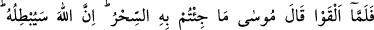

79. Fir’avn: “Bütün bilgili sihirbazları bana getirin.” dedi.
“Fir’avn” Musa ve Harun (a.s.)’ı sözle susturmaktan ümidini kesince bu sefer bir şey
yaparak susturmanın çarelerini bulmalarını emrederek adamlarına: “Bütün bilgili” sihir
sanatının inceliklerini bilen ve bu konuda Musa ile boy ölçüşebilecek uzman, mahâretli
“sihirbazları bana getirin.” dedi.”
80. Sihirbazlar gelince Mûsa onlara: “Atacağınızı atın.” dedi.
“Sihirbazlar gelince” Yani Fir’avn’un adamları bütün bilgili sihirbazları getirip
Musa (a.s.)’ın karşısına çıktıklarında “Musa onlara: “Atacağınızı atın.” Yani hangi tür
sihir olursa olsun ortaya koyacağınızı koyun “dedi.” Onlara ne atacaklarsa atmalarının
söylenmesinde sihirbazların ortaya koyacakları sihrin aldırış bile edilmeyecek bir şey
olduğunu bildirmek ve hafife alıp küçültmek mânâsı vardır.
Eğer “Sihir yapmak küfür, küfrü emretmek de küfür olduğu halde nasıl olur da Musa
küfrü emreder?” dersen şöyle cevap veririm: Musa, sihirbazların yaptıklarının fâsid bir
iş olduğu halkın gözü önünde ortaya çıksın diye sadece ipleri ve sopaları atmalarını
emrediyor, yoksa sihir yapmalarını değil.
81. Onlar atınca Musa dedi ki: “Sizin yaptığınız sihirdir. Allah onu mutlaka boşa
çıkaracaktır. Çünkü Allah bozguncuların işini düzeltmez.”
“Onlar” iplerini ve değneklerini “atınca” büyük bir sihir ortaya koyarak insanları
korkutunca “Musa dedi ki:” Onlara ve ortaya koydukları büyüye aldırış etmeyerek:
Esas “sizin yaptığınız sihirdir.” yoksa Fir’avn ve adamlarının sihir dediği Allah’ın
mûcizeleri sihir değildir. “Allah onu mutlaka boşa çıkaracaktır.” benim vâsıtamla
ortaya koyacağı mucizelerle onu tamamen yok edecek; hiçbir tesiri kalmayacaktır. Ya da
büyünün bâtıl olduğunu insanlara gösterecektir.
Musa gelip de attığı zaman asâyı
Ne sihri kalır ortada ne sihirbazı
Sihir mûcizeye benzemez, emin ol. “Çünkü Allah bozguncuların işini düzeltmez.”
Sabit bırakmaz, tamamına erdirmez, devam ettirmez, tam aksine mahveder ortadan